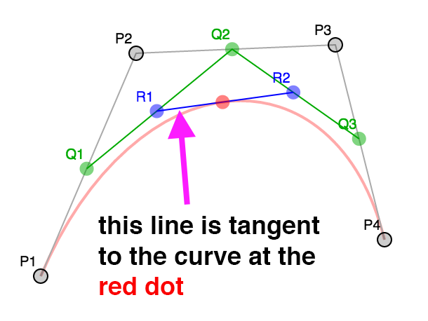

WebGL 3D Geometry - Lathe
This is probably a kind of obscure topic but I found it interesting so I'm writing it up. It is not something I recommend you actually do. Rather, I think working through the topic will help illustrate some things about making 3d models for WebGL.
Someone asked how to make a bowling pin shape in WebGL. The smart answer is "Use a 3D modeling package like Blender, Maya, 3D Studio Max, Cinema 4D, etc. Use it to model a bowling pin, export, read the dat. (The OBJ format is relatively simple).
But, that got me thinking, what if they wanted to make a modeling package?
There's a few ideas. One is to make a cylinder and try to pinch it in the right places using sin waves applied in certain places. The problem with that idea you wouldn't get a smooth top. A standard cylinder is generated as a series of equally spaced rings but you'd need more rings where things are more curvy.
In a modeling package you'd make a bowling pin by making a 2d silhouette or rather a curved line that matches the edge of a 2d silhouette. You'd then lathe that into a 3d shape. By lathe I mean you'd spin it around some axis and generate points as you do. This lets you easily make any round objects like a bowl, a glass, a baseball bat, bottles, light bulbs, etc.
So, how do we do that? Well first we need some way to make a curve. Then we'd need to compute points on that curve. We'd then rotate those points around some axis using matrix math and build triangles from those points.
The most common kind of curve in computer graphics seems to be a bezier curve. If you've ever edited a curve in Adobe Illustrator or Inkscape or Affinity Designer or similar programs that's a bezier curve.
A bezier curve or rather a cubic bezier curve is formed by 4 points. 2 points are the end points. 2 points are the "control points".
Here's 4 points
We pick a number between 0 and 1 (called t) where 0 = the beginning
and 1 = the end. We then compute the corresponding t point
between each pair of points. P1 P2, P2 P3, P3 P4.
In other words if t = .25 then we compute a point 25% of the way
going from P1 to P2, another 25% of the way going from P2 to P3
and one more 25% of the way going from P3 to P4.
You can drag the slider to adjust t and you can also move points
P1, P2, P3, and P4.
We do the same for the resulting points. Compute t points between Q1 Q2
and Q2 Q3.
Finally we do the same for those 2 points and compute the t point between
R1 R2.
The positions of that red point make a curve.
So this is a cubic bezier curve.
Note that while the interpolation between points above and the process of making 3 points from 4, then 2 from 3, and finally 1 point from 2 works that's not the normal way. Instead someone plugged in all the math and simplified it to a formula like this
invT = (1 - t)
P = P1 * invT^3 +
P2 * 3 * t * invT^2 +
P3 * 3 * invT * t^2 +
P4 * t^3
Where P1, P2, P3, P4 are the points like the examples above and P
is the red dot.
In a 2D vector art program like Adobe Illustrator when you make a longer curve it's actually made from many small 4 point curves like this. By default most apps lock the control points around a shared start/end point and make sure they are always opposite relative to the shared point.
See this example, move P3 or P5 and the code will move the other.
Notice the curve made by P1,P2,P3,P4 is a separate curve from
the one made by P4,P5,P6,P7. It's just when P3 and P5 are on exact
opposite sides of P4 together they look like one continuous curve.
Most apps will then usually give you the option to stop locking them
together so you can get a sharp corner. Un-check the lock checkbox
then drag P3 or P5 and it will become even more clear they are
separate curves.
Next up we need a way to generate points on a curve.
Using the formula above we can generate a point for
a given t value like this.
function getPointOnBezierCurve(points, offset, t) {
const invT = (1 - t);
return v2.add(v2.mult(points[offset + 0], invT * invT * invT),
v2.mult(points[offset + 1], 3 * t * invT * invT),
v2.mult(points[offset + 2], 3 * invT * t * t),
v2.mult(points[offset + 3], t * t *t));
}
And we can generate a set of points for the curve like this
function getPointsOnBezierCurve(points, offset, numPoints) {
const cpoints = [];
for (let i = 0; i < numPoints; ++i) {
const t = i / (numPoints - 1);
cpoints.push(getPointOnBezierCurve(points, offset, t));
}
return cpoints;
}
Note: v2.mult and v2.add are small JavaScript functions I included
to help do math with points.
In the diagram above you can choose a number of points. If the curve is sharp you'd want more points. If the curve is nearly a straight line though you'd probably want less points. One solution is to check how curvy a curve is. If it's too curvy then split it into 2 curves.
The splitting part turns out to be easy. If we look at the various
levels of interpolation again, the points P1, Q1, R1, RED make one
curve and the points RED, R2, Q3, P4 make the other for any value of t.
In other words we can split the curve anywhere and get 2 curves
that match the original.
The second part is deciding if a curve needs to be split or not. Looking around the net I found this function that for a given curve decides how flat it is.
function flatness(points, offset) {
const p1 = points[offset + 0];
const p2 = points[offset + 1];
const p3 = points[offset + 2];
const p4 = points[offset + 3];
let ux = 3 * p2[0] - 2 * p1[0] - p4[0]; ux *= ux;
let uy = 3 * p2[1] - 2 * p1[1] - p4[1]; uy *= uy;
let vx = 3 * p3[0] - 2 * p4[0] - p1[0]; vx *= vx;
let vy = 3 * p3[1] - 2 * p4[1] - p1[1]; vy *= vy;
if(ux < vx) {
ux = vx;
}
if(uy < vy) {
uy = vy;
}
return ux + uy;
}
We can use that in our function that gets points for a curve. First we'll check if the curve is too curvy. If so we'll subdivide, if not we'll add the points in.
function getPointsOnBezierCurveWithSplitting(points, offset, tolerance, newPoints) {
const outPoints = newPoints || [];
if (flatness(points, offset) < tolerance) {
// just add the end points of this curve
outPoints.push(points[offset + 0]);
outPoints.push(points[offset + 3]);
} else {
// subdivide
const t = .5;
const p1 = points[offset + 0];
const p2 = points[offset + 1];
const p3 = points[offset + 2];
const p4 = points[offset + 3];
const q1 = v2.lerp(p1, p2, t);
const q2 = v2.lerp(p2, p3, t);
const q3 = v2.lerp(p3, p4, t);
const r1 = v2.lerp(q1, q2, t);
const r2 = v2.lerp(q2, q3, t);
const red = v2.lerp(r1, r2, t);
// do 1st half
getPointsOnBezierCurveWithSplitting([p1, q1, r1, red], 0, tolerance, outPoints);
// do 2nd half
getPointsOnBezierCurveWithSplitting([red, r2, q3, p4], 0, tolerance, outPoints);
}
return outPoints;
}
This algorithm does a good job of making sure we have enough points but it doesn't do such a great job of getting rid of unneeded points.
For that we turn to the Ramer Douglas Peucker algorithm I found on the net.
In that algorithm we take a list of points. We find the furthest point from the line formed by the 2 end points. Then we check if that point is further away from the line than some distance. If it's less than than that distance we just keep the 2 end points and discard the rest Otherwise we run the algorithm again, once with the points from the start to the furthest point and again from the furthest point to the end point.
function simplifyPoints(points, start, end, epsilon, newPoints) {
const outPoints = newPoints || [];
// find the most distance point from the endpoints
const s = points[start];
const e = points[end - 1];
let maxDistSq = 0;
let maxNdx = 1;
for (let i = start + 1; i < end - 1; ++i) {
const distSq = v2.distanceToSegmentSq(points[i], s, e);
if (distSq > maxDistSq) {
maxDistSq = distSq;
maxNdx = i;
}
}
// if that point is too far
if (Math.sqrt(maxDistSq) > epsilon) {
// split
simplifyPoints(points, start, maxNdx + 1, epsilon, outPoints);
simplifyPoints(points, maxNdx, end, epsilon, outPoints);
} else {
// add the 2 end points
outPoints.push(s, e);
}
return outPoints;
}
v2.distanceToSegmentSq is a function that computes the distance squared from a point
to a line segment. We use the distance squared because it's faster to compute than
the actual distance. Since we only care which point is furthest the distance squared
will work just as well as the actual distance.
Here's that in action. Adjust the distance to see more points added or removed.
Back to our bowling pin. We could try to extend the code above into a full editor. It would need to be able to add and remove points, lock and unlock control points. It would need undo, etc... But there's an easier way. We can just use any of the major editors mentioned above. I used this online editor.
Here's the svg silhouette of a bowling pin I made.
It's made from 4 bezier curves. The data for that path looks like this
<path fill="none" stroke-width="5" d="
m44,434
c18,-33 19,-66 15,-111
c-4,-45 -37,-104 -39,-132
c-2,-28 11,-51 16,-81
c5,-30 3,-63 -36,-63
"/>
Interpreting that data we get these points.
___
44, 371, |
62, 338, | 1st curve
63, 305,___|__
59, 260,___| |
55, 215, | 2nd curve
22, 156,______|__
20, 128,______| |
18, 100, | 3rd curve
31, 77,_________|__
36, 47,_________| |
41, 17, | 4th curve
39, -16, |
0, -16,____________|
Now that we have the data for the curves we need to compute some points on them.
// gets points across all segments
function getPointsOnBezierCurves(points, tolerance) {
const newPoints = [];
const numSegments = (points.length - 1) / 3;
for (let i = 0; i < numSegments; ++i) {
const offset = i * 3;
getPointsOnBezierCurveWithSplitting(points, offset, tolerance, newPoints);
}
return newPoints;
}
We'd call simplifyPoints on the result.
Now we need to spin them around. We decide how many divisions to make, for each division you use the matrix math to rotate the points around the Y axis. Once we've made all the points we connect them with triangles using indices.
// rotates around Y axis.
function lathePoints(points,
startAngle, // angle to start at (ie 0)
endAngle, // angle to end at (ie Math.PI * 2)
numDivisions, // how many quads to make around
capStart, // true to cap the start
capEnd) { // true to cap the end
const positions = [];
const texcoords = [];
const indices = [];
const vOffset = capStart ? 1 : 0;
const pointsPerColumn = points.length + vOffset + (capEnd ? 1 : 0);
const quadsDown = pointsPerColumn - 1;
// generate points
for (let division = 0; division <= numDivisions; ++division) {
const u = division / numDivisions;
const angle = lerp(startAngle, endAngle, u) % (Math.PI * 2);
const mat = m4.yRotation(angle);
if (capStart) {
// add point on Y axis at start
positions.push(0, points[0][1], 0);
texcoords.push(u, 0);
}
points.forEach((p, ndx) => {
const tp = m4.transformPoint(mat, [...p, 0]);
positions.push(tp[0], tp[1], tp[2]);
const v = (ndx + vOffset) / quadsDown;
texcoords.push(u, v);
});
if (capEnd) {
// add point on Y axis at end
positions.push(0, points[points.length - 1][1], 0);
texcoords.push(u, 1);
}
}
// generate indices
for (let division = 0; division < numDivisions; ++division) {
const column1Offset = division * pointsPerColumn;
const column2Offset = column1Offset + pointsPerColumn;
for (let quad = 0; quad < quadsDown; ++quad) {
indices.push(column1Offset + quad, column2Offset + quad, column1Offset + quad + 1);
indices.push(column1Offset + quad + 1, column2Offset + quad, column2Offset + quad + 1);
}
}
return {
position: positions,
texcoord: texcoords,
indices: indices,
};
}
The code above generates positions and texcoords, it then generates indices to make triangles
out of those. The capStart and capEnd specify whether or not generate cap points. Imagine
we're making a can. These options would specify whether or not to close the ends.
Using our simplified code we can generate WebGL buffers with this data like this
const tolerance = 0.15;
const distance = .4;
const divisions = 16;
const startAngle = 0;
const endAngle = Math.PI * 2;
const capStart = true;
const capEnd = true;
const tempPoints = getPointsOnBezierCurves(curvePoints, tolerance);
const points = simplifyPoints(tempPoints, 0, tempPoints.length, distance);
const arrays = lathePoints(points, startAngle, endAngle, divisions, capStart, capEnd);
const extents = getExtents(arrays.position);
if (!bufferInfo) {
bufferInfo = webglUtils.createBufferInfoFromArrays(gl, arrays);
Here's an example
Play with the sliders to see how they effect the result.
There's an issue though. Turn on triangles and you'll see the texture is not evenly
applied. This is because we based the v texture coordinate on the index of the
points on the line. If they were evenly spaced that might work. They're not though
so we need to do something else.
We can walk the points and compute the total length of the curve and each point's
distance on that curve. We can then divide by the length and get a better value
for v.
// rotates around Y access.
function lathePoints(points,
startAngle, // angle to start at (ie 0)
endAngle, // angle to end at (ie Math.PI * 2)
numDivisions, // how many quads to make around
capStart, // true to cap the top
capEnd) { // true to cap the bottom
const positions = [];
const texcoords = [];
const indices = [];
const vOffset = capStart ? 1 : 0;
const pointsPerColumn = points.length + vOffset + (capEnd ? 1 : 0);
const quadsDown = pointsPerColumn - 1;
+ // generate v coordinates
+ let vcoords = [];
+
+ // first compute the length of the points
+ let length = 0;
+ for (let i = 0; i < points.length - 1; ++i) {
+ vcoords.push(length);
+ length += v2.distance(points[i], points[i + 1]);
+ }
+ vcoords.push(length); // the last point
+
+ // now divide each by the total length;
+ vcoords = vcoords.map(v => v / length);
// generate points
for (let division = 0; division <= numDivisions; ++division) {
const u = division / numDivisions;
const angle = lerp(startAngle, endAngle, u) % (Math.PI * 2);
const mat = m4.yRotation(angle);
if (capStart) {
// add point on Y axis at start
positions.push(0, points[0][1], 0);
texcoords.push(u, 0);
}
points.forEach((p, ndx) => {
const tp = m4.transformPoint(mat, [...p, 0]);
positions.push(tp[0], tp[1], tp[2]);
* texcoords.push(u, vcoords[ndx]);
});
if (capEnd) {
// add point on Y axis at end
positions.push(0, points[points.length - 1][1], 0);
texcoords.push(u, 1);
}
}
// generate indices
for (let division = 0; division < numDivisions; ++division) {
const column1Offset = division * pointsPerColumn;
const column2Offset = column1Offset + pointsPerColumn;
for (let quad = 0; quad < quadsDown; ++quad) {
indices.push(column1Offset + quad, column1Offset + quad + 1, column2Offset + quad);
indices.push(column1Offset + quad + 1, column2Offset + quad + 1, column2Offset + quad);
}
}
return {
position: positions,
texcoord: texcoords,
indices: indices,
};
}
And here's the result
Those texture coordinates are still not perfect. We haven't decided what to do for the caps. This is yet another reason why you should just use a modeling program. We could come up with different ideas about how to compute uv coordinates for the caps but they'd probably not be all that useful. If you google for UV map a barrel you'll see that getting perfect UV coordinates is not so much a math problem as a data entry problem and you need nice tools to enter that data.
There's still one other thing we should do and that's add normals.
We could compute a normal for each point on the curve. In fact if you go back to the examples
on this page you can see the line formed by R1 and R2 are a line tangent to the curve.

A normal is perpendicular to the tangent so it would be easy to use the tangents to generate normals.
But, lets imagine we wanted to make a candle holder with a silhouette like this

There are many smooth areas but also many hard corners. How do we decide which normals to use? Worse, when we want a sharp edge we need extra vertices. Because vertices have both a position and a normal if we need a different normal for something at the same position then we need a different vertex. This is why if we're making a cube we actually need at least 24 vertices. Even though a cube only has 8 corners each face of the cube needs different normals at those corners.
When generating a cube it's easy to just generate the correct normals but for a more complex shape there's no easy way to decide.
All modeling programs have various options to generate normals. A common way is for every single vertex they average the normals of all the polygons that share that vertex. Except, they let the user choose some maximum angle. If the angle between one polygon shared by a vertex is greater than that maximum angle then they generate a new vertex.
Let's do that.
function generateNormals(arrays, maxAngle) {
const positions = arrays.position;
const texcoords = arrays.texcoord;
// first compute the normal of each face
let getNextIndex = makeIndiceIterator(arrays);
const numFaceVerts = getNextIndex.numElements;
const numVerts = arrays.position.length;
const numFaces = numFaceVerts / 3;
const faceNormals = [];
// Compute the normal for every face.
// While doing that, create a new vertex for every face vertex
for (let i = 0; i < numFaces; ++i) {
const n1 = getNextIndex() * 3;
const n2 = getNextIndex() * 3;
const n3 = getNextIndex() * 3;
const v1 = positions.slice(n1, n1 + 3);
const v2 = positions.slice(n2, n2 + 3);
const v3 = positions.slice(n3, n3 + 3);
faceNormals.push(m4.normalize(m4.cross(m4.subtractVectors(v1, v2), m4.subtractVectors(v3, v2))));
}
let tempVerts = {};
let tempVertNdx = 0;
// this assumes vertex positions are an exact match
function getVertIndex(x, y, z) {
const vertId = x + "," + y + "," + z;
const ndx = tempVerts[vertId];
if (ndx !== undefined) {
return ndx;
}
const newNdx = tempVertNdx++;
tempVerts[vertId] = newNdx;
return newNdx;
}
// We need to figure out the shared vertices.
// It's not as simple as looking at the faces (triangles)
// because for example if we have a standard cylinder
//
//
// 3-4
// / \
// 2 5 Looking down a cylinder starting at S
// | | and going around to E, E and S are not
// 1 6 the same vertex in the data we have
// \ / as they don't share UV coords.
// S/E
//
// the vertices at the start and end do not share vertices
// since they have different UVs but if you don't consider
// them to share vertices they will get the wrong normals
const vertIndices = [];
for (let i = 0; i < numVerts; ++i) {
const offset = i * 3;
const vert = positions.slice(offset, offset + 3);
vertIndices.push(getVertIndex(vert));
}
// go through every vertex and record which faces it's on
const vertFaces = [];
getNextIndex.reset();
for (let i = 0; i < numFaces; ++i) {
for (let j = 0; j < 3; ++j) {
const ndx = getNextIndex();
const sharedNdx = vertIndices[ndx];
let faces = vertFaces[sharedNdx];
if (!faces) {
faces = [];
vertFaces[sharedNdx] = faces;
}
faces.push(i);
}
}
// now go through every face and compute the normals for each
// vertex of the face. Only include faces that aren't more than
// maxAngle different. Add the result to arrays of newPositions,
// newTexcoords and newNormals, discarding any vertices that
// are the same.
tempVerts = {};
tempVertNdx = 0;
const newPositions = [];
const newTexcoords = [];
const newNormals = [];
function getNewVertIndex(x, y, z, nx, ny, nz, u, v) {
const vertId =
x + "," + y + "," + z + "," +
nx + "," + ny + "," + nz + "," +
u + "," + v;
const ndx = tempVerts[vertId];
if (ndx !== undefined) {
return ndx;
}
const newNdx = tempVertNdx++;
tempVerts[vertId] = newNdx;
newPositions.push(x, y, z);
newNormals.push(nx, ny, nz);
newTexcoords.push(u, v);
return newNdx;
}
const newVertIndices = [];
getNextIndex.reset();
const maxAngleCos = Math.cos(maxAngle);
// for each face
for (let i = 0; i < numFaces; ++i) {
// get the normal for this face
const thisFaceNormal = faceNormals[i];
// for each vertex on the face
for (let j = 0; j < 3; ++j) {
const ndx = getNextIndex();
const sharedNdx = vertIndices[ndx];
const faces = vertFaces[sharedNdx];
const norm = [0, 0, 0];
faces.forEach(faceNdx => {
// is this face facing the same way
const otherFaceNormal = faceNormals[faceNdx];
const dot = m4.dot(thisFaceNormal, otherFaceNormal);
if (dot > maxAngleCos) {
m4.addVectors(norm, otherFaceNormal, norm);
}
});
m4.normalize(norm, norm);
const poffset = ndx * 3;
const toffset = ndx * 2;
newVertIndices.push(getNewVertIndex(
positions[poffset + 0], positions[poffset + 1], positions[poffset + 2],
norm[0], norm[1], norm[2],
texcoords[toffset + 0], texcoords[toffset + 1]));
}
}
return {
position: newPositions,
texcoord: newTexcoords,
normal: newNormals,
indices: newVertIndices,
};
}
function makeIndexedIndicesFn(arrays) {
const indices = arrays.indices;
let ndx = 0;
const fn = function() {
return indices[ndx++];
};
fn.reset = function() {
ndx = 0;
};
fn.numElements = indices.length;
return fn;
}
function makeUnindexedIndicesFn(arrays) {
let ndx = 0;
const fn = function() {
return ndx++;
};
fn.reset = function() {
ndx = 0;
}
fn.numElements = arrays.positions.length / 3;
return fn;
}
function makeIndiceIterator(arrays) {
return arrays.indices
? makeIndexedIndicesFn(arrays)
: makeUnindexedIndicesFn(arrays);
}
In the code above first we generate normals for each face (each triangle) from the original points. We then generate a set of vertex indices to find points that are the same. That's because as we rotated the points the first point and the last point should match up but they have different UV coordinates so they are not the same point. To compute the vertex normals we need them to be considered the same point.
Once that's done, for each vertex, we make a list of all the faces it's used by.
Finally we average the normals of all the faces each vertex uses excluding ones that are
more than maxAngle different and generate a new set of vertices.
Here's the result
Notice we get sharp edges where we want them. Make the maxAngle bigger and you'll see those edges
get smoothed out when the neighboring faces start getting included in the normal calculations.
Also try adjusting the divisions to something like 5 or 6 then adjust the maxAngle until the
edges around are hard but the parts you want smooth are still smooth. You can also set the mode
to lit to see what the object would look like with lighting, the reason we needed normals.
So, what did we learn?
We learned if you want to make 3D data USE A 3D MODELING PACKAGE!!! üòù
To do anything really useful you'd likely need a real UV editor. Dealing with the caps as well is something a 3D editor would help with. Instead of using a limited set of options when lathing you'd use other features of the editor to add caps and generate easier UVs for the caps. 3d editors also support extruding faces and extruding along a path which if you take a look it should be pretty obvious how they work based on the lathe example above.
References
I wanted to mention I couldn't have done this without this awesome page about bezier curves.
What's this modulo operator doing here?
If you look closely at the lathePoints function you'll see this modulo
when computing the angle.
for (let division = 0; division <= numDivisions; ++division) {
const u = division / numDivisions;
* const angle = lerp(startAngle, endAngle, u) % (Math.PI * 2);
Why is that there?
When we rotate the points all the way around a circle we really want the first
and last points to match. Math.sin(0) and Math.sin(Math.PI * 2)
should match but floating point math on a computer is not perfect and while they are close enough
in general they are not actually 100% equal.
That matters when we try to compute normals. We want to know all the faces a vertex
uses. We compute that by comparing vertices. If 2 vertices are equal we assume they are the
same vertex. Unfortunately, because Math.sin(0) and Math.sin(Math.PI * 2)
are not equal they will not be considered the same vertex. That means when computing the normals
they won't take into consideration all the faces and their normals will come out wrong.
Here's the result when that happens

As you can see there is a seam where the vertices are not considered shared because they are not a 100% match
My first thought was that I should change my solution so that when I check for matching vertices I check if they are within some distance. If they are then they're the same vertex. Something like this.
const epsilon = 0.0001;
const tempVerts = [];
function getVertIndex(position) {
if (tempVerts.length) {
// find the closest existing vertex
let closestNdx = 0;
let closestDistSq = v2.distanceSq(position, tempVerts[0]);
for (let i = 1; i < tempVerts.length; ++i) {
let distSq = v2.distanceSq(position, tempVerts[i]);
if (distSq < closestDistSq) {
closestDistSq = distSq;
closestNdx = i;
}
}
// was the closest vertex close enough?
if (closestDistSq < epsilon) {
// yes, so just return that vertex's index.
return closestNdx;
}
}
// no match, add the vertex as a new vertex and return its index.
tempVerts.push(position);
return tempVerts.length - 1;
}
It worked! It got rid of the seam. Unfortunately it took several seconds to run and made the interface unusable. This is because it's a O^2 solution. If you slide the sliders for the most vertices, low distance, high divisions, in the example above you can generate ~114000 vertices. For an O^2 that's around 12 billion iterations that have to happen!
I searched the net for a easy solution. I didn't find one. I thought about putting all the points in an octree to make finding matching points faster but that seemed like a way too much for this article.
It was then I realized if the only issue is the end points maybe I could add a modulo to the math so that the points were actually the same. The original code was like this
const angle = lerp(startAngle, endAngle, u);And the new code like this
const angle = lerp(startAngle, endAngle, u) % (Math.PI * 2);
Because of the modulo the angle when endAngle is Math.PI * 2 becomes 0
and so it's the same as the start. The seam went away. Problem solved!
Still, even with the change if you set distance to 0.001
and divisions to 60 it takes nearly a second on my machine to recompute the mesh. While
there might be ways to optimize that I think the point is realizing that generating complex
meshes is a generally slow operation. This just one example of why a 3d game can run at 60fps
but a 3d modeling package often chugs at very slow frame rates.